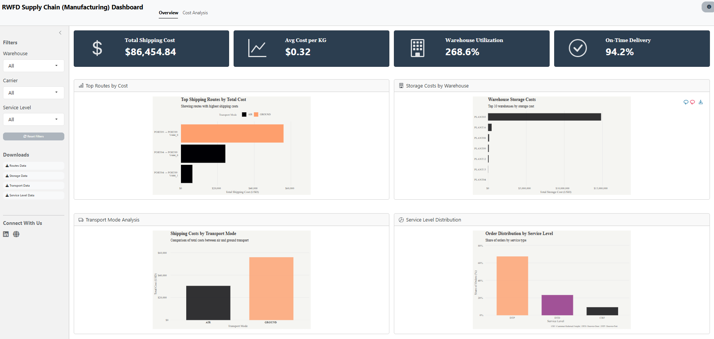

R version 4.4.1 (2024-06-14 ucrt)
Platform: x86_64-w64-mingw32/x64
Running under: Windows 11 x64 (build 22631)
Matrix products: default
locale:
[1] LC_COLLATE=English_United States.utf8
[2] LC_CTYPE=English_United States.utf8
[3] LC_MONETARY=English_United States.utf8
[4] LC_NUMERIC=C
[5] LC_TIME=English_United States.utf8
time zone: America/New_York
tzcode source: internal
attached base packages:
[1] stats graphics grDevices datasets utils methods base
loaded via a namespace (and not attached):
[1] htmlwidgets_1.6.4 compiler_4.4.0 fastmap_1.2.0 cli_3.6.3
[5] htmltools_0.5.8.1 tools_4.4.0 rstudioapi_0.17.1 yaml_2.3.10
[9] rmarkdown_2.29 knitr_1.49 jsonlite_1.8.9 xfun_0.49
[13] digest_0.6.37 rlang_1.1.4 renv_1.0.3 evaluate_1.0.1 RWFD Supply Chain Analytics Dashboard
Interactive visualization of manufacturing logistics metrics, focusing on cost analysis and warehouse utilization
R Programming
Shiny
Supply Chain
2025
An interactive R Shiny dashboard that transforms complex supply chain data into actionable insights. Features real-time KPIs, cost analysis, and warehouse performance metrics with dynamic filtering and visualizations.

Overview
1. Overview
The RWFD Supply Chain Dashboard is an interactive R Shiny application designed to analyze and visualize manufacturing logistics data. The dashboard focuses on two main areas:
-
Overview Dashboard
- Real-time tracking of total shipping costs
- Average cost per KG analysis
- Warehouse utilization monitoring
- On-time delivery performance metrics
-
Cost Analysis Dashboard
- Detailed cost breakdown by location
- Unit cost analysis with efficiency quadrants
- Performance matrix for warehouse comparison
2. Key Features
-
Interactive Elements
- Dynamic filtering by warehouse location
- Carrier-specific analysis
- Service level breakdowns
- Real-time metric updates
-
Visualizations
- Interactive route cost analysis
- Storage cost comparisons
- Transport mode breakdowns
- Service level distribution
- Efficiency matrix heatmap
-
Data Downloads
- CSV exports for all visualizations
- Customizable data filtering
- Comprehensive metrics export
3. Technical Implementation
The dashboard is built using:
- R Shiny: Core web framework
- bslib: Modern Bootstrap 5 styling
- tidyverse: Data processing
- ggiraph: Interactive visualizations
- DT: Data tables
- Additional packages: scales, glue, janitor
4. Project Structure
├── app.R # Main application
├── global.R # Global settings
├── modules/
│ ├── overview/ # Overview dashboard
│ └── cost_analysis/ # Cost analysis
└── R/
└── utils/ # Helper functions5. Data Sources
The application processes four key datasets:
-
Order List: Transaction data
- Shipping details
- Order metrics
- Service levels
-
Freight Rates: Pricing data
- Carrier rates
- Route costs
- Service options
-
Warehouse Data: Facility metrics
- Storage costs
- Utilization rates
- Capacity limits
-
Warehouse Capacities: Infrastructure data
- Daily capacity limits
- Regional information
- Facility type and status
6. Project Links
Live Dashboard: RWFD Supply Chain Dashboard
Source Code: GitHub Repository
7. Session Info
TipExpand for Session Info
8. GitHub Repository
TipExpand for GitHub Repo
9. References
TipExpand for References
- Data originally from:
Kalganova, Tatiana; Dzalbs, Ivars (2019). Supply Chain Logistics Problem Dataset. Brunel University London. Dataset
Accessed via: RWFD Real World Fake Data
10. Citation
TipExpand for References
To cite this dashboard: - Ponce, S. (2024). RWFD Supply Chain Dashboard Shiny Application